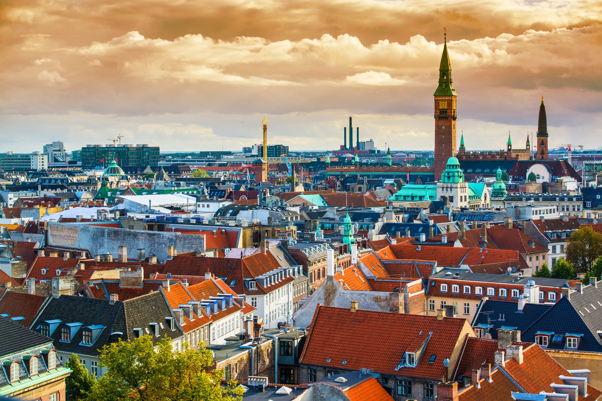

Examples of Smart City:
Seoul, South Korea
- It shouldn’t be a surprise to see this city at the top of the list, as Seoul, South Korea was awarded Smart City of 2022 at Smart City Expo World Congress. Seoul is home to the highest broadband penetration rates and fastest internet speeds of all major cities across the globe. The city is highly admired for its advanced e-governance system that gives them access to an array of databases, government services, and online citizen engagement opportunities.
- Seoul is also known for its highly advanced public transportation. Recent additions have included air quality filters, free phone changers, and enhanced wifi in passenger cars. To top it off, Seoul will soon be the first city to offer a car-hailing service with autonomous driving vehicles by partnering with Hyundai Motor Group.
- What Makes It Smart: Seoul, South Korea, prioritizes the health and well-being of its citizens, and they seek ways to make living and publicly commuting in the city a more efficient and pleasant experience.
Copenhagen, Denmark

- Copenhagen’s journey to becoming a smart city is based largely on becoming more green and eco-friendly. In fact, Copenhagen’s main target is to become a carbon-neutral city by 2025.
- Copenhagen authorities collect data about citizens, businesses, and real estate trends and use this digitized information to offer free access to public data to drive innovation for smart solutions that would benefit the city and its citizens.
- What Makes It Smart: Copenhagen, Denmark, is actively encouraging citizens to innovate and create smart solutions that offset the effect urbanization has on climate change.
London, England
- London, England is home to several smart city initiatives. The Civic Innovation Challenge aims to encourage and support entrepreneurs and start-ups to develop smart solutions to the issue the city faces as a result of growing urbanization.
- Another initiative is Connect London, which set a goal to provide 5G connectivity and modernize the city by fitting lamp posts with automated sensors and offering more electric vehicle charging stations.
- The London Plan provides more details on how the city plans to innovate and adapt to an ever-growing population by improving healthcare, transportation and energy management.
- What Makes It Smart: London is aware of its ever-growing population and is taking steps to implement already available technologies while supporting innovations that make city living more connected and convenient.
New York, New York, USA

- New York City’s smart city project first took place in 2020, when hundreds of smart sensors were installed throughout the city. The goal of these sensors is to collect data and help manage city services like waste management and collection. The city is also taking steps to modernize outdated utilities, like replacing pay phone booths with wifi-enabled phone charging stations.
- New York is also concerned about public safety and is testing software that uses historical data, terrain modeling and other collected data to predict and quickly respond to crime.
- What Makes It Smart: While there is still room for improvement, New York is making great strides in strengthening its public resources like city-owned utilities and law enforcement.
Oslo, Norway
- Oslo, like Copenhagen, has set its sights on becoming more sustainable and eco-friendly. One smart city improvement includes hundreds of thousands of LED lights that can intelligently adjust the amount of lighting based on current needs.
- Oslo also plans to switch all vehicles in the city to electric-only by 2025. Considering the size and population of the city (about 1,086,000), this might seem like a lofty goal; however, their plan is well underway with data showing they are on track to reach this goal.
- Not only are electric vehicles making a difference in Oslo’s transportation system, but the city also monitors cars to better understand traffic flow and find ways to reduce traffic congestion.
- As Oslo grows, it embraces green building practices to allow for population growth without compromising its eco-friendly values.
- What Makes It Smart: While sustainable cities and smart cities are not the same, Oslo is a great example of how smart city technologies can create a more sustainable living environment within a metropolitan area.
- What Makes It Smart: While sustainable cities and smart cities are not the same, Oslo is a great example of how smart city technologies can create a more sustainable living environment within a metropolitan area.
Singapore, The Republic of Singapore
- Singapore is often considered the world’s smartest city. With its advanced economy, Singapore’s smart city initiatives seek to raise productivity. One example is their switch to a digital healthcare system that uses wearable devices and video consultations to care for patients remotely.
- Singapore is also known for its plethora of sensors that can track information about the daily lives of citizens or track a certain area to know when it’s busiest. This data helps city officials understand the needs of their citizens solely based on their routines.
- And lastly, Singapore is developing an eco-smart forest city that is vehicle-free and only walkable or cyclable. With over 42,000 homes planned, this no-vehicle zone is sure to draw some attention from eco-friendly city dwellers.
- What Makes It Smart: Singapore is devoted to creating a technologically and environmentally friendly advanced city that, in a lot of ways, is far ahead of the curve. Singapore breeds new technologies and does not hesitate to put them to the test if they believe the tech will benefit its citizens.